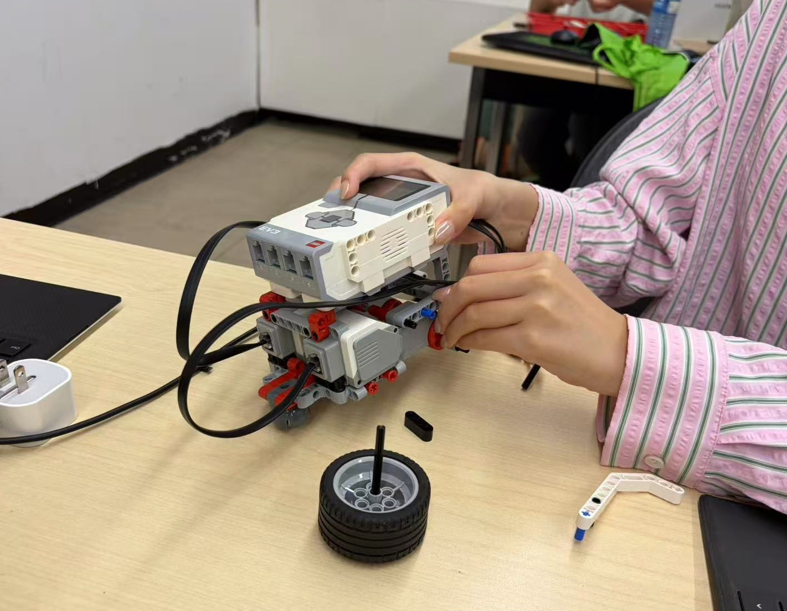
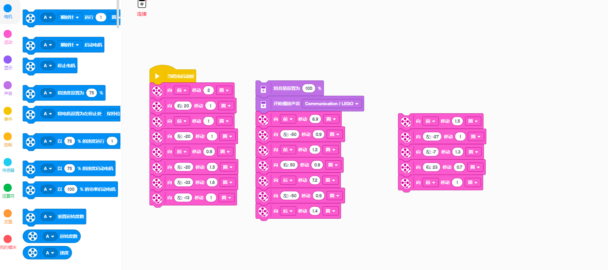
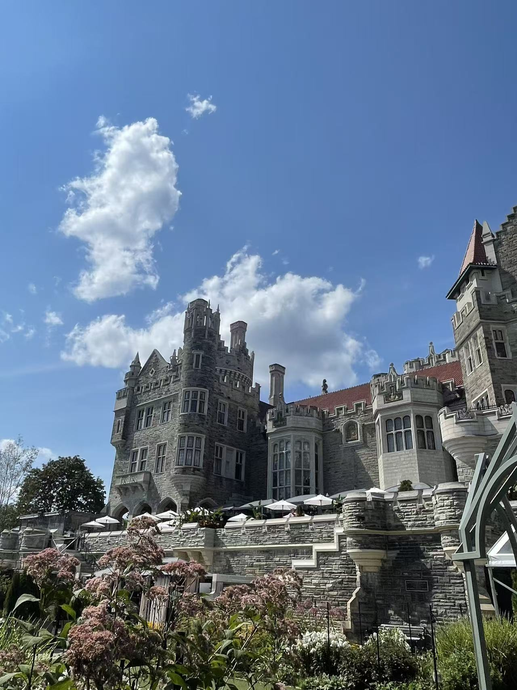
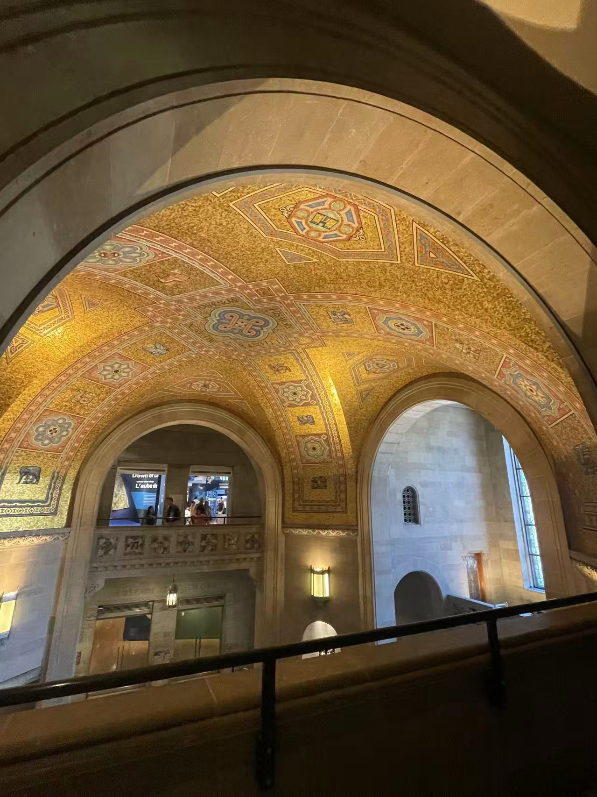
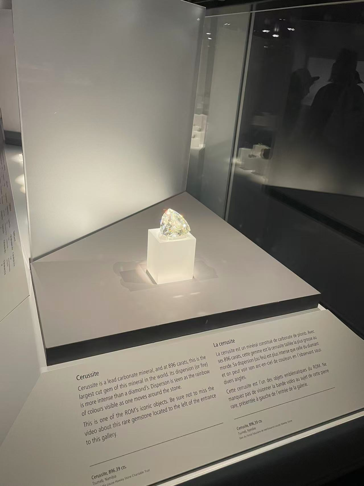

I am a student from Shanghai

I like watching videos and go travelling.

I want to Have a general understanding of Canadian culture and lifestyle, improve my English and academic skills,experience different country.

print("My First Python Program")
print("____________________")
print("What is your name?")
name=input()
print("Hello " + name + "!")
print("How old are you?")
age = int(input())
print("You are " + str(age) + " years old.")
print("Did you eat breakfast?")
answer = input()
if (answer == "Yes"):
print("Good job! " + name)
else:
print("You must be hungry!")


B=int(input("How many tickets do you want to buy?"))
T=int(input("How many tickets are there?"))
P=int(input("How many tickets did other people buy?"))
if (P > T):
print("Sorry,there are only "+str(T)+" tickets.Choose a number for P that is <= to "+str(T))
P=int(input("How many tickets did other people buy?\n"))
if (B>(T-P)):
print("No")
else:
print("Yes,"+str(T-B-P)+" tickets left")
As a famous Canadian landmark, it is very tall. I took the elevator to the observation deck and enjoyed great city views of Lake Ontario.


During my visit to Casa Loma, I was amazed by its splendid Gothic‑revival architecture. Walking through its fancy halls, secret tunnels and lovely gardens, I learned about Sir Henry Pellatt and his dramatic story. From the tower, I got a wonderful overlook of Toronto. The old castle stood in great contrast against the modern city below. It was fascinating to see how a wealthy private dream turned into a public historical landmark. This trip gave me a better sense of Toronto’s history. Casa Loma is a memorable place full of history and old‑time charm.


